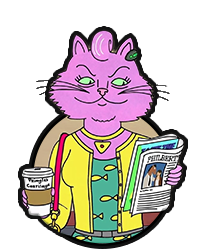

“I’m Responsible For My Own Happiness? I Can't Even Be Responsible For My Own Breakfast!"
BoJack is an adult, male horse weighing over 1,200 pounds. He is around 6'7" feet tall. He has brow fur and a black mane, with a white snippet on his snout, a white diamond-shaped mark on his forehead, and a pink spot on his nose.
Despite being a horse, BoJack, like other animals in the BoJack Horseman series, has a humanoid body, and is designed with human feet and hands and does he not have a tail.
BoJack is often bad-tempered and irritable, with little patience for a lot of people around him, who although give BoJack plenty of attention, are constantly insulted and looked down upon by BoJack's very bitter nature
Despite these struggles and insecurities that he has, BoJack does care about others, such as his friends, can even be insightful, doesn't really want to hurt anybody, and has proven to be more tender-hearted than he appears to be.
Acting Athletic Charismastic Responsible Drinking
Investigating Chain Smoking Running Singing
